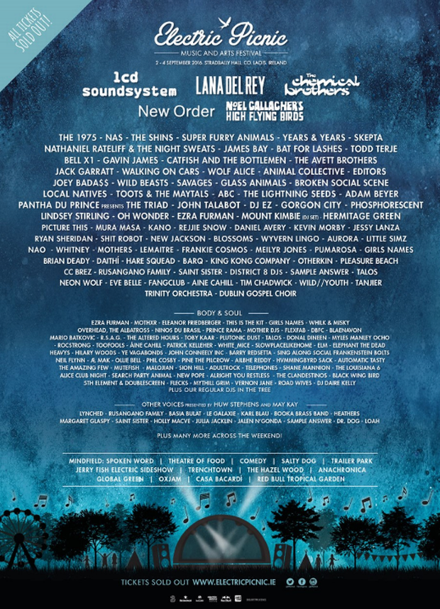

Home
Lineup
Tickets
Photos
Food & Drink
History
Contact
Electric Picnic began as a one-day event in 2004, before growing to a weekend-long festival within a year. Electric Picnic has been described as an enormously successful, award-winning, established brand which attempts to bring to life a microcosmic cultural experience where music is just the tip of the iceberg.
With 2016's event gathering over 55,000 festival goesr, the amound of people attending is continuously rising each year.
Here is a brief bit of history from 2016's festival along with the electric lineup.

Electric Picnic 2016 saw 55,000 Picnickers descend upon the idyllic setting of Stradbally Hall for a sold-out weekend of incredible music, captivating entertainment, unique experiences and unforgettable memories.
Friday night saw festival favourites The Chemical Brothers take to the stage for a stunning headline performance filled with mind-blowing visuals and hits such as 'Hey Boy Hey Girl' and 'Block Rockin' Beats'. Picnic veterans LCD Soundsystem made a much welcome return to the festival on Saturday night with a high-energy show packed with classics from their critically acclaimed back catalogue. Noel Gallgher's High Flying Birds were one of the most highly anticipated performances of the weekend, and they did not disappoint. The band delivered an outstanding 75 minute set and Noel even treated us to some Oasis tracks.
The Main Stage was brought to a close on Sunday night by Lana Del Rey and New Order. Lana's haunting vocals mesmerised the masses with her dreamy pop anthems, while New Order brought us back in time with songs such as 'Blue Monday' and 'Bizzare Love Triangle'.
There was an eclectic mix of acts across the festival throughout the weekend including disco-don Todd Terje, indie heroes The Shins, grime kingpin Skepta, techno legend Adam Beyer and synth-pop stars Years & Years.
The Comedy Stage played host to the biggest comedy line up the festival has seen to date with Dylan Moran, David O'Doherty, Rubberbandits and Reginald D Hunter headlining the stage. The line up also featured a host of hot Irish talent including Aisling Bea, Deirdre O'Kane, Eric Lalor and Joe Rooney.
There were also some new additions to the festival in 2016 with the introduction of swimming in the beautiful setting of Stradbally lake. The Hazel Wood brought a world of art and performance to the woods through interactive theatre, shadow puppetry, visual displays, captivating art and much more. Over the weekend, All City Records, District 8 and Sunday Times! curated the line up for Anachronica: a new immersive experience which replicated an abandoned city in the woods.
Picnickers also enjoyed the mystical beauty of Body&Soul, the mobiletropolis that is Trailer Park, the reggage vibes of Trenchtown, thought provoking conversations in Mindfield and music delights from Other Voices, Salty Dog and the Jerry Fish Electric Sideshow.
See you all in September 2017 for the 14th edition of Electric Picnic that is sure to be filled with even more memorable moments.